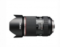

器材库 > 120中幅镜头 > HD PENTAX DA645 28-45mmF4.5ED AW SR

详细规格
镜头类型
广角变焦镜头
发布日期
2014-08-06
厂家推荐价格
537,300.00 （日元）
焦距
28-45mmmm
等效35mm画幅焦距
22-35.5mmmm
最大光圈
F4.5
最小光圈
F32
镜头结构
17片/12组
光圈叶片
9片
最近对焦距离
40cm
最大放大倍率
0.21倍
滤镜口径
82mm
防抖
是
尺寸
99×151.5mm
重量
1470g
该产品暂无存档的网友点评
产品图 / 样片
评测 / 相关文章
该产品暂无存档的评测文章